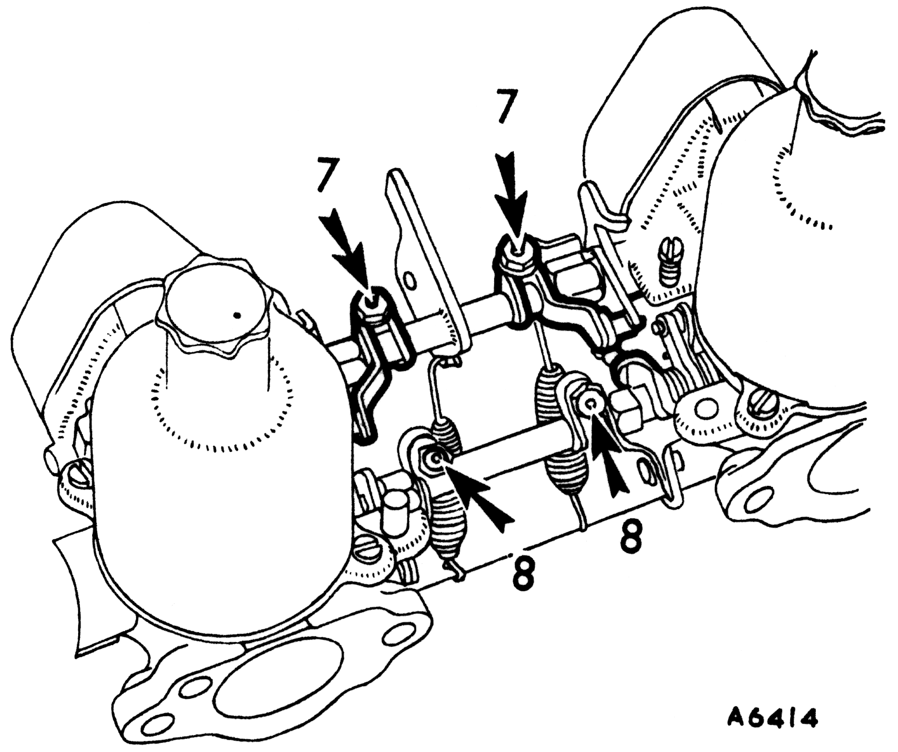
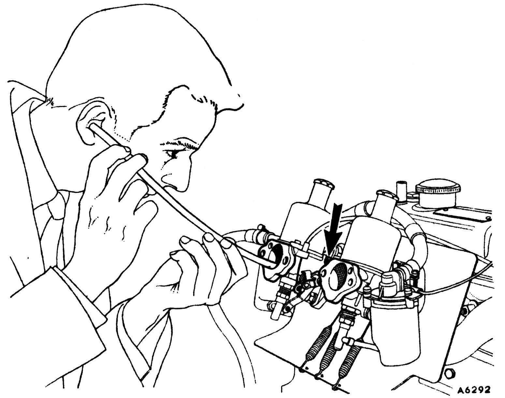
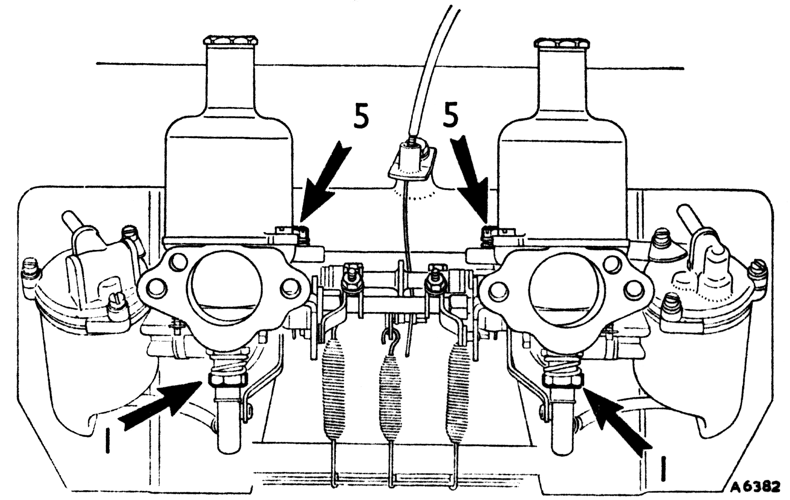
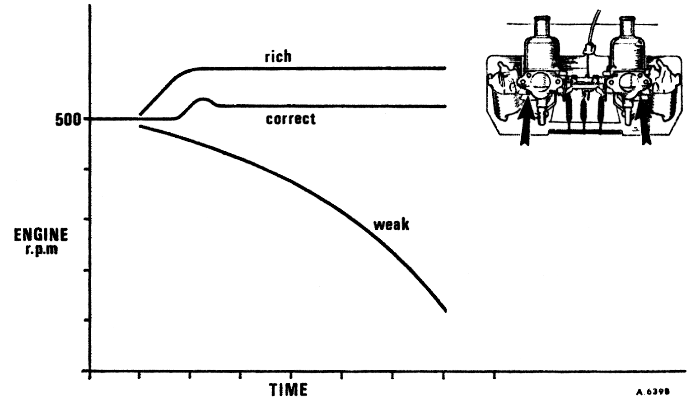
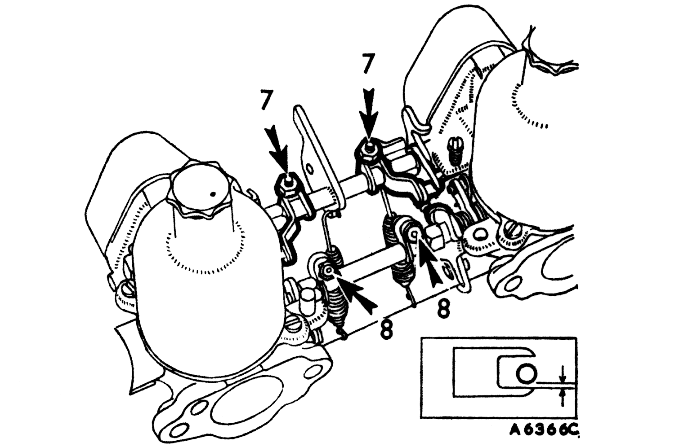

Tuning
Multi-carburetters
Remove the air cleaners and carry out item 1 as for single on all carburetters then:

9
- Slacken both of the clamping bolts (7) on the throttle spindle interconnections.
- Disconnect the jet control interconnection by slackening the clamping bolts (8).
- Carry out items 2 and 3 as for single carburetters, then additionally:

10
- Restart the engine and adjust the throttle adjusting screws on each carburetter to give the desired idling speed as indicated by the glow of the ignition warning light.
- Compare the intensity of the intake 'hiss' on all carburetters and alter the throttle adjusting screws until the 'hiss' is the same.
|
|

11
- Turn the jet adjusting nuts (1) on all carburetters up to weaken or down to richen the same amount until the fastest idling speed consistent with even running is obtained.
- Readjust the throttle adjusting screws (5) to give correct idling if necessary.

12
- Check for correct mixture by gently pushing the lifting pin of the front carburetter 1/32 in. (.8 mm.) after free movement has been taken up. The graph illustrates the possible effect on engine r.p.m. Readjust the mixture strength if necessary.
- Repeat the operation on the other carburetters and after adjustment re-check since they are all inter-dependent.
- Item 5 shows the correct type of exhaust smoke.

13
- Set the throttle interconnection clamping levers (7) so that the link pin is .006 in. (.15 mm.) away from the lower edge of the fork (see inset). Tighten the clamp bolts.
- With both jet levers at their lowest position, set the jet interconnection lever clamp bolts (8) so that both jets commence to move simultaneously.
|